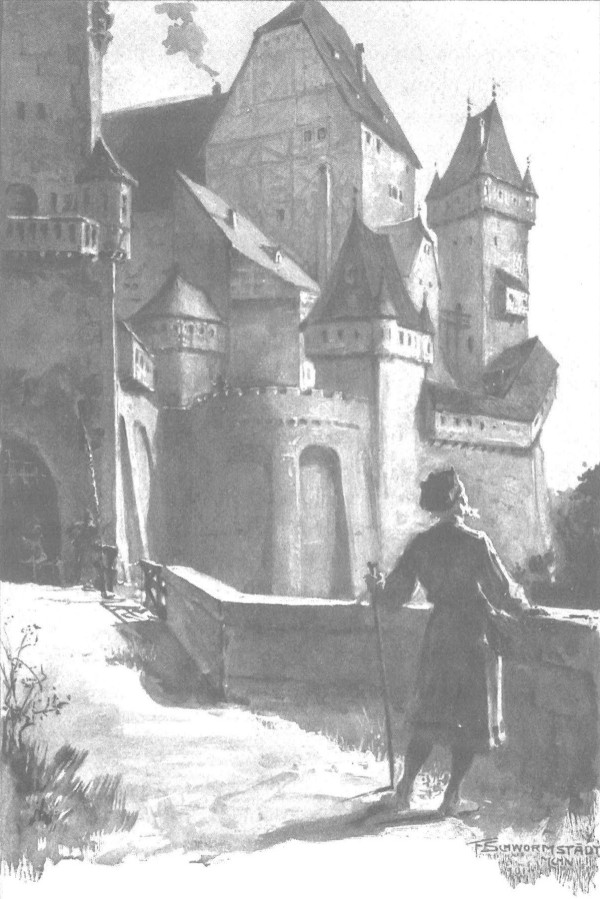

Ông Maćko đã sống đến những ngày hạnh phúc của cuộc đời. Ông thường nói với láng giềng rằng ông đã được nhiều hơn những gì ông mong ước. Ngay đến tuổi già cũng chỉ khiến ông bạc tóc bạc râu, nhưng cho đến nay không hề lấy đi sức mạnh và sức khỏe của ông. Trái tim ông tràn ngập những niềm vui trước kia chưa từng nếm trải. Khuôn mặt hà khắc thời trước của ông giờ trở nên nhân hậu hơn, mắt ông tươi cười với mọi người. Lòng ông tin rằng mọi điều xấu đã chấm dứt vĩnh viễn, sẽ không có lo buồn, không tai ương nào làm xáo trộn dòng chảy thanh bình của những tháng ngày tươi sáng êm trôi. Chiến đấu đến già, về nhà làm ăn và gia tăng tài sản cho “cháu nội” - đó là mong muốn lớn nhất của ông trong mọi thời, và mọi thứ đều hoàn thành một cách tuyệt vời. Công việc đồng áng diễn ra vô cùng thuận lợi. Cây rừng đã được đốn chặt phần lớn; vùng đất mới đã được dọn sạch và gieo hạt, mỗi mùa xuân các loại ngũ cốc khác nhau lại nhú mầm xanh mướt; tài sản sinh sôi; trên đồng cỏ nhà quý tộc già nhìn thấy hằng ngày đàn bốn mươi ngựa cái với lũ ngựa con nhẩn nha; đàn cừu và gia súc gặm cỏ trên các gò đồi và hõm đất hoang; Bogdaniec đã biến cải hoàn toàn từ một điền trang hoang vắng thành một ngôi làng dân cư đông đúc và trù phú, làm lóa mắt bất kỳ ai ngay từ đằng xa bởi chòi canh cao vọi và những bức tường mới tinh của thành trì nhỏ, lấp lánh vàng rực dưới ánh mặt trời và đỏ ráng chiều hôm.
Một năm sau khi có cặp song sinh, lại thêm một cậu bé nữa chào đời
- Thế trước đây ta có những gì nào? - Một hôm, ông bảo Zbyszko. - Không gì hết! Chính Đức Chúa đã ban cho tất cả. Ông Pakosz trang Sulislawice có mỗi một cái làng, với những hai mươi hai đứa con trai, vậy mà họ đâu có chết đói. Đất đai ở vương quốc ta và Litva thiếu lắm sao? Làng mạc và lâu đài nằm trong tay bọn chó đẻ Thánh chiến còn ít lắm à? Hey? Điều gì xảy ra nếu Chúa Giêsu ra tay? Đó sẽ là nơi ra gì lắm đấy chứ, bởi có những lâu đài xây toàn bằng gạch đỏ, mà đức vua lòng lành của chúng ta sẽ biến thành các tỉnh trấn.
Đó là điều thật đáng chú ý, vì lúc này Giáo đoàn đang ở đỉnh cao quyền lực, giàu có, sức mạnh, đông đảo những đội quân tinh nhuệ, hơn hẳn các vương quốc phía tây, vậy mà vị hiệp sĩ già này lại nghĩ các thành quách của quân Thánh chiến sẽ là nơi cư ngụ trong tương lai của cháu con mình. Và nhiều người ở vương quốc của đức vua Jagiełło có lẽ cũng đã nghĩ giống như vậy, không chỉ bởi vì vùng đất cũ của Ba Lan là nơi Giáo đoàn đang chiếm, mà còn vì cái sức lực hùng mạnh đang sục sôi trong lồng ngực của quốc gia và tìm đường thoát về mọi phía.
Vào năm thứ tư kể từ cuộc hôn nhân của Zbyszko, tòa thành nhỏ đã được xây lên, nhờ những bàn tay lao động không chỉ từ trang này, Zgorzelice, Moczydoly, mà cả những trang ấp láng giềng, đặc biệt là ông lão Wilk trang Brzozowa, người còn lại mỗi mình trên đời sau cái chết của con trai, đã trở nên thân thiết với ông Maćko, rồi sau đó yêu mến cả Zbyszko và Jagienka. Ông Maćko đã trang trí các căn phòng bằng những chiến lợi phẩm mà tự ông hoặc ông cùng Zbyszko thu được, với cả những vật được thừa hưởng từ ông Jurand điền trang Spychow, lẫn của cha tu viện trưởng và những gì Jagienka mang từ nhà đi, những kính cửa sổ mua từ Sieradz, và cô đã bài trí một ngôi nhà thật tuyệt vời. Song mãi đến năm thứ năm, Zbyszko mới cùng vợ con chuyển vào ở trong thành, khi các công trình khác như chuồng ngựa, kho ngũ cốc, bếp và nhà tắm đều đã hoàn thành, cùng với các hầm ngầm mà ông già đã xây bằng đá và vôi vữa, có độ bền vĩnh cửu. Riêng ông Maćko không chuyển vào thành, mà thích ở lại nhà cũ, và từ chối những lời cầu xin của Zbyszko cùng Jagienka, ông nói những suy nghĩ của mình:
- Chú muốn được chết ở nơi được sinh ra. Các cháu thấy đấy, trong cuộc chiến Grzymalit với Nalecz [252] , Bogdaniec bị cháy rụi - tất cả nhà lớn nhà bé, thậm chí đến cả hàng rào cũng bị lửa thiêu, mỗi ngôi nhà này còn sót lại. Mọi người đồn nhau rằng vì mái nhà nhiều rêu quá nên không cháy, nhưng chú nghĩ đó là ơn Chúa, Người muốn chúng ta trở về đây và lại phát triển lên. Hồi chiến chinh, chú thường than vãn rằng mình chẳng còn gì để trở về, nhưng chú nói vậy không hoàn toàn đúng, bởi vì thực ra, dù không còn gì để sinh nhai và đưa vào miệng, nhưng vẫn có một nơi để trú thân. Các cháu còn trẻ, nghĩ khác, nhưng chú nghĩ là một khi ngôi nhà này đã không bỏ mặc chúng ta, thì chú không nỡ lòng nào từ bỏ nó.

Ông Maćko vẫn thường thích vào thành để thấy sự hoành tráng của nó so với chỗ ở xưa kia
Và ông ở lại. Song ông vẫn thường thích vào thành để thấy sự hoành tráng của nó so với chỗ ở xưa kia, đồng thời ngắm nhìn Zbyszko, Jagienka và các cháu trai. Mọi thứ ông thấy ở đó phần lớn là thành quả của ông, nhưng lại khiến ông phải tự hào và kinh ngạc. Thi thoảng, ông lão Wilk ghé thăm ông để cùng trò chuyện bên bếp lửa, hoặc ông đến thăm ông ta ở Brzozowa, vì vậy có lần bày tỏ những suy nghĩ của mình về “trật tự mới”, ông nói:
- Bác biết đấy! Nhiều khi tôi cũng ngạc nhiên. Tất nhiên, Zbyszko đã từng ở tại triều đình Kraków (suýt nữa nó mất đầu!), ở Mazowsze, ở thành Malborg, ở dinh thự quận công Janusz, còn Jagienka cũng giàu có, nhưng chúng chưa từng có tòa thành riêng… Nhưng bây giờ chúng hành xử cứ như chúng chưa bao giờ sống cách nào khác ấy… Thưa bác, chúng cứ đi, đi mãi, từ phòng này sang phòng khác, cứ đi, đi và ra mệnh lệnh, mệt thì chúng ngồi nghỉ. Cứ như viên trấn thành và phu nhân đích thực ấy! Cũng có một phòng, nơi chúng cùng với các chưởng quản, các quản nông và gia nhân dùng bữa, ghế dành cho vợ chồng nó cao hơn, những người khác ngồi thấp hơn, và đợi cho đến khi ông bà chủ yên vị thì mới bày bát đĩa ra. Đó là phong tục cung đình, và tôi phải nhớ rằng hai đứa không phải là ông bà lớn nào cả, mà là cháu trai cháu dâu mình, chúng hôn tay lão già này, đưa vào chỗ ngồi danh dự nhất và gọi là ân nhân của chúng.
- Nên Đức Chúa Giêsu mới ban phước cho họ. - Lão Wilk già nhận xét.
Rồi ông buồn bã gật gù, uống chút mật ong, lấy cây sắt cời những khúc củi đang cháy trong lò mà bảo:
- Còn thằng bé của tôi thì đã mất!
- Đó là ý Chúa!
- Vâng! Những đứa lớn hơn, cả năm đứa, cũng đã nằm xuống từ trước. Bác cũng biết đấy. Vâng, ý Chúa. Nhưng nó là thằng khỏe nhất trong cả bọn. Đúng là họ nhà Wilk, và giá không chết, biết đâu giờ nó chẳng tự xây tòa thành riêng.
- Giá thằng Cztan chết thì tốt hơn.
- Thằng Cztan là cái thá gì! Nó chỉ biết vác thớt cối xay trên lưng, bao nhiêu lần bị con tôi nện gãy răng! Thằng con tôi tập luyện phong cách hiệp sĩ, còn Cztan bây giờ còn bị con vợ nện vào mặt, bởi nó khỏe nhưng mà ngu.
- Hey! Như cái khấu đuôi! - Ông Maćko xác nhận.
Và nhân dịp, ông ca tụng Zbyszko không chỉ về võ nghệ hiệp sĩ mà cả trí thông minh, rằng hồi ở thành Malborg chàng đã vung kiếm đuổi theo các hiệp sĩ hàng đầu, “còn trò chuyện với quận công thì ngon như cắn hạt dẻ”. Ông cũng ca ngợi đầu óc đâu ra đấy của chàng và sự giỏi giang trong làm ăn, thiếu đức tính ấy thì tài sản của cải sẽ sớm tiêu tan. Tuy nhiên, không muốn lão Wilk nghĩ rằng điều đó có thể xảy ra như một mối đe dọa đối với họ, nên ông hạ giọng kết thúc câu chuyện:
- Nhờ ơn Chúa, mọi thứ đều đủ đầy hơn những gì người ta biết, nhưng ông chớ nói với ai nhé.
Tuy nhiên, người ta cũng đoán biết và kể cho nhau đến mức cường điệu, đặc biệt là về những tài sản mà Bogdaniec đã lấy về từ Spychow. Họ đồn rằng hàng thùng tiền được chuyển từ Mazowsze về. Một lần, ông Maćko đã đồng ý cho những người thừa kế giàu có ở Koniecpol vay mấy chục lạng bạc, điều đó càng khiến cho khắp vùng tin là ông có cả “kho báu”. Cũng vì thế, vị thế của Bogdaniec càng lớn lên, lòng tôn trọng của mọi người tăng lên, tòa thành không bao giờ vắng khách, và mặc dù tính tằn tiện, ông Maćko không nhìn họ bằng con mắt miễn cưỡng, bởi ông biết rằng danh tiếng của gia đình cũng sẽ được nhân lên.
Đặc biệt, các lễ rửa tội rất dồi dào, và mỗi năm một lần, sau lễ Đức Mẹ Lên Trời, Zbyszko tổ chức một bữa tiệc rất to cho khu vực láng giềng, nơi các quý bà quý cô đến xem các cuộc tập trận của các hiệp sĩ, nghe các nhạc công trình diễn và nhảy múa với các hiệp sĩ trẻ trong ánh đuốc bập bùng cho đến sáng. Những lúc đó, ông lão Maćko đưa mắt liếc nhìn, tận hưởng hình ảnh thật lịch lãm và mang vẻ lãnh chúa của Zbyszko cùng Jagienka. Zbyszko đã trưởng thành, người to lớn hơn, và mặc dù vóc dáng to lớn khác người, khuôn mặt chàng nom vẫn rất trẻ trung, những khi chàng quấn một dải băng màu tía ngang mái tóc dài của mình, khoác chiếc áo choàng tuyệt vời thêu chỉ bạc và vàng, thì không chỉ ông Maćko mà nhiều nhà quý tộc tự bảo: “Chúa tôi! Quả là một hoàng tử đang ngồi trong lâu đài của chính mình!” Và bao hiệp sĩ hiểu phong tục Tây phương đã quỳ gối trước Jagienka, xin cô hãy để họ xem cô là nữ chúa của tâm tưởng - cô rạng ngời sức khỏe, tuổi trẻ, sức mạnh và sắc đẹp. Ngay cả người thừa kế lớn tuổi ở Koniecpol, vốn là thống đốc của Sieradz, cũng kinh ngạc khi gặp cô và so sánh cô với ánh bình minh, thậm chí là với mặt trời “chiếu sáng cho thế gian và sưởi ấm cả xương cốt người già”.